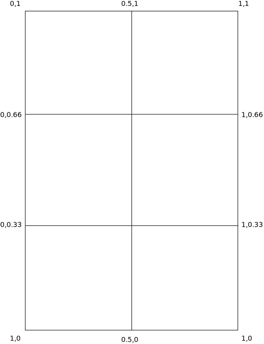

Lesson 17 - Texture Atlases
Introduction
In real-time computer graphics, a texture atlas (also called a tile map, tile engine, or sprite sheet) is a large image containing a collection, or "atlas", of sub-images, each of which is a texture map for some part of a 2D or 3D model. The sub-textures can be rendered by modifying the texture coordinates of the object's uvmap on the atlas, essentially telling it which part of the image its texture is in. In an application where many small textures are used frequently, it is often more efficient to store the textures in a texture atlas which is treated as a single unit by the graphics hardware. This saves memory and because there are less rendering state changes by binding once, it can be faster to bind one large texture once than to bind many smaller textures as they are drawn.
The NeHe demo (#17) used a texture map to hold all the glyphs for a bitmapped font. That's kind of superfluous in three.js, which has good support for outline fonts. But the concept is useful, so we'll cover it here, but simply use a 3x2 texture map of 6 different images to fill the faces of our old friend, the spinnable cube.
UV Coordinates Redux
We do this by employing a technique called UV mapping (remember we convered UV coordinates in Lesson 10). First we initialize our scene then create a cube to spin (same as the previous demos). Then load our texture-atlas:
var geometry = new THREE.BoxGeometry(2.0, 2.0, 2.0);
var texture = THREE.ImageUtils.loadTexture("images/texture-atlas.png");
var material = new THREE.MeshLambertMaterial( { map : texture } );
Now we need to tell the rendering engine where our textures are in the "atlas". So we assign the coordinates of each "tile" in the atlas to a THREE.Vector2, which we can then assign to the face verticies in the mesh.
The code creates six arrays, one for each sub-image in the texture. Each array contains 4 points that define the bounds of the sub image. The values of the coordinates range from 0 to 1 where 0,0 is the bottom left corner and 1,1 is the upper right corner.So the mapping looks like this:

Note that we have to have two vectors per texture since three.js doesn't support rectangles, so each texture is mapped to two triangles.
var bricks = [
new THREE.Vector2(0, .666),
new THREE.Vector2(.5, .666),
new THREE.Vector2(.5, 1),
new THREE.Vector2(0, 1)];
var clouds = [
new THREE.Vector2(.5, .666),
new THREE.Vector2(1, .666),
new THREE.Vector2(1, 1),
new THREE.Vector2(.5, 1)];
var crate = [
new THREE.Vector2(0, .333),
new THREE.Vector2(.5, .333),
new THREE.Vector2(.5, .666),
new THREE.Vector2(0, .666)];
var stone = [
new THREE.Vector2(.5, .333),
new THREE.Vector2(1, .333),
new THREE.Vector2(1, .666),
new THREE.Vector2(.5, .666)];
var water = [
new THREE.Vector2(0, 0),
new THREE.Vector2(.5, 0),
new THREE.Vector2(.5, .333),
new THREE.Vector2(0, .333)];
var wood = [
new THREE.Vector2(.5, 0),
new THREE.Vector2(1, 0),
new THREE.Vector2(1, .333),
new THREE.Vector2(.5, .333)];Then we assign those vectors to the faceVertex coordinates in the BoxGeometry we created.
geometry.faceVertexUvs[0][0] = [ bricks[0], bricks[1], bricks[3] ];
geometry.faceVertexUvs[0][1] = [ bricks[1], bricks[2], bricks[3] ];
geometry.faceVertexUvs[0][2] = [ clouds[0], clouds[1], clouds[3] ];
geometry.faceVertexUvs[0][3] = [ clouds[1], clouds[2], clouds[3] ];
geometry.faceVertexUvs[0][4] = [ crate[0], crate[1], crate[3] ];
geometry.faceVertexUvs[0][5] = [ crate[1], crate[2], crate[3] ];
geometry.faceVertexUvs[0][6] = [ stone[0], stone[1], stone[3] ];
geometry.faceVertexUvs[0][7] = [ stone[1], stone[2], stone[3] ];
geometry.faceVertexUvs[0][8] = [ water[0], water[1], water[3] ];
geometry.faceVertexUvs[0][9] = [ water[1], water[2], water[3] ];
geometry.faceVertexUvs[0][10] = [ wood[0], wood[1], wood[3] ];
geometry.faceVertexUvs[0][11] = [ wood[1], wood[2], wood[3] ];Rendering the Cube
Then we just assign our texture-atlas material and the geometry to the cube mesh.
cubeMesh = new THREE.Mesh(geometry, material);
cubeMesh.position.set(0.0, 0.0, zTranslation);
gfxScene.add(cubeMesh);
And that's it! Click on this link to see the actual rendered demo in all it's texture-atlas glory!
As always, the original sources are on github here.